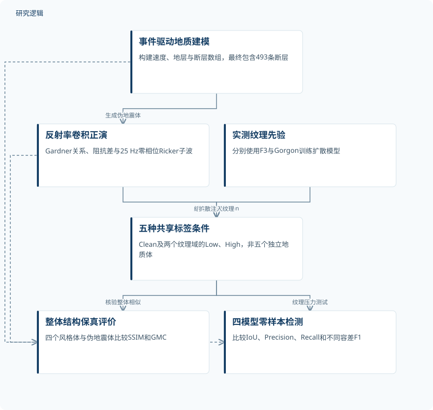
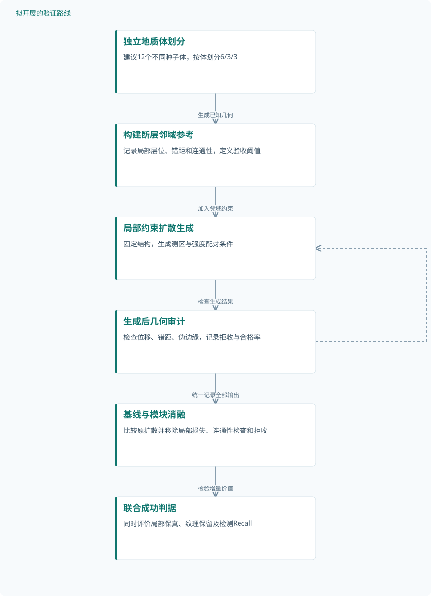

论文精读
SeisMark：面向稳健三维地震断层检测的大规模开放基准
SeisMark: A Large-Scale Open Benchmark for Robust 3D Seismic Fault Detection
精读更新 2026-10-13 09:29 · 依据论文全文整理
三维地震断层检测的难题，不只是识别断裂面，而是在标签可信与纹理真实之间取得平衡：实测资料难以核验地下真值，简化合成资料又可能高估模型能力。SeisMark将程序化地质建模、反射率正演与扩散纹理合成串联，在同一地质结构上构造五种纹理条件。其阅读价值在于揭示模型如何随域偏移退化，同时提醒我们：大体素规模、视觉真实性与部署可靠性并不是同一件事。
文章目录
可信标签与真实纹理，为何难以兼得
断层是低信噪比地震体中稀疏、细薄的面状结构，采集伪影与非平稳纹理容易造成漏检或误检。F3等公开实测资料的标签依赖解释者，小断层可能遗漏；地下结构又难以直接物理核验，因此真实资料并不天然具备完整真值。
简化物理合成资料能够提供明确标签，却往往缺少绕射、多次波和复杂噪声，模型可能只学会理想反射背景中的断裂特征。SeisMark试图固定地质结构、单独改变测区纹理，让评价从“能否识别干净断层”转向“纹理变化后还能保留多少检测能力”。
先建地质骨架，再注入测区纹理
程序化模型以Gorgon地区伸展构造为参考，按事件顺序维护P波速度、地层标识和断层标签。Deposit、Squish、Fault与Stratigraphic等模块分别表达沉积、变形、铲式断层和层序演化；最终体包含14个地层标签、5条主断层和488条次级断层。
正演先通过Gardner关系估计密度，再由阻抗差得到垂向反射率，与中心频率25 Hz的零相位Ricker子波卷积。该1D近似保留反射几何和断层错移，但并非完整波场模拟；绕射、多次波等复杂响应交由后续学习先验补充，物理准确性仍需独立核验。
扩散模型分别学习F3与Gorgon实测纹理，以伪地震体作为结构控制，通过部分加噪与迭代去噪完成细化。Low主要改变高频细纹理，High允许修改中频振幅；边缘偏离惩罚旨在保持标签对齐，但损失实现、权重及两档参数值未报告。
SeisMark：固定结构的跨纹理压力测试


原研究从一个程序化地质体生成五个共享标签的纹理条件，分别验证整体结构相似性和预训练检测器鲁棒性。
下载 SVG图示关系说明
实线表示相邻阶段的信息流，虚线表示跨阶段联系或反馈。
事件驱动地质建模 → 反射率卷积正演：生成伪地震体；反射率卷积正演 → 五种共享标签条件：结构控制及Clean；实测纹理先验 → 五种共享标签条件：扩散注入纹理；事件驱动地质建模 → 四模型零样本检测：提供体素真值；反射率卷积正演 → 整体结构保真评价：提供结构参考；五种共享标签条件 → 整体结构保真评价：核验整体相似；五种共享标签条件 → 四模型零样本检测：纹理压力测试
一个地质体上的五条件零样本压力测试
发布规格为1500×1500×1200体素、18.75×18.75×6.0 km，体素间距12.5×12.5×5.0 m，总计2.70 billion体素。独立地质样本只有一个连续体：Clean及两个测区各自的Low、High变体共享标签，不能算成五个独立样本；实测资料提供纹理先验，并非真实测区检测测试。
结构保真验证将四个风格化体与伪地震体比较，计算整立方体SSIM和梯度幅值Pearson相关性GMC。检测验证则零样本评估FaultSeg3D、FaultSeg3D+、Fault-Net与RGF，报告IoU、Precision、Recall和F1；位置容差T=0、1、2由3×3×3连接结构的三维膨胀实现。
模型没有在SeisMark上训练或微调，正文明确V1、V2使用原论文权重。扩散训练切片或patch数量、增强数量、训练验证测试划分、检测分块和阈值均未报告，也没有独立模块消融；Fault-Net使用真实人工标注切片，其他模型仅用合成资料，因而不能把差异单独归于架构。
| 验证任务 | 样本与规模 | 主要结果 |
|---|---|---|
| 扩散纹理合成的整体结构保真验证 | 一个独立连续地质体，1500×1500×1200体素；四个变体共享493条断层标签。扩散训练样本、增强及重复生成数量未报告。 | 按SSIM/GMC排列：F3 Low为0.92/0.91，F3 High为0.88/0.87，Gorgon Low为0.97/0.93，Gorgon High为0.96/0.90。 |
| 四个预训练检测器的跨纹理零样本比较 | 一个独立地质体、五个纹理变体；5条主断层和488条次级断层不是独立样本。模型训练样本、测试块及重复次数未报告。 | Fault-Net五组IoU依次为0.441、0.389、0.297、0.384、0.278，均最高；V1的Recall@T=1从Clean的0.804降至Australia High的0.305。 |
展开数据来源、分组、对照与验证边界
扩散纹理合成的整体结构保真验证
数据来源。以程序化速度模型正演得到的伪地震体为参考，比较采用F3、Gorgon实测纹理先验生成的四个风格化体。
分组与工况。F3 Low、F3 High、Gorgon Low、Gorgon High；两个来源域与两档强度形成四个条件，具体强度参数未报告。
数据划分。SSIM与GMC在整个立方体计算；扩散训练、验证、测试划分及测区隔离策略未报告。
对照与消融。输入伪地震体作为结构参考；未报告去除结构约束的消融，CycleGAN/NST直接比较仍为未来工作。
评价指标。SSIM衡量结构相似性；GMC为参考与风格体梯度幅值图的Pearson相关系数，均为无量纲指标。
验证边界。全局指标不能证明局部断层严格保真；逐断层位移、错距变化、伪边缘及重复生成不确定性未报告，部分阈值文字与表值不一致。
四个预训练检测器的跨纹理零样本比较
数据来源。一个18.75×18.75×6.0 km程序化地质体，体素间距12.5×12.5×5.0 m；五种纹理条件均共享真值。
分组与工况。Clean、F3 Low/High、Australia Low/High；每组评估四个模型，并报告T=0、1、2的位置容差结果。
数据划分。采用预训练模型零样本测试，未报告SeisMark训练或微调；原模型划分及训练资料与纹理来源的潜在重合未报告。
对照与消融。FaultSeg3D、FaultSeg3D+、Fault-Net、RGF；Clean为纹理对照。模型训练资料不对称，未进行统一训练或独立架构消融。
评价指标。IoU、Precision、Recall、F1；容差Recall膨胀预测、Precision膨胀真值，使用3×3×3连接结构迭代T次。
验证边界。未报告真实测区检测、置信区间、主次断层分层指标、阈值及分块策略；IoU容差实现未明确，跨模型差异不能单独归因架构。
纹理暴露漏检，但尚未证明真实部署可靠
Fault-Net在五个条件上的IoU均最高，从Clean的0.441降至F3 High的0.297和Australia High的0.278。FaultSeg3D的Recall在T=1时由Clean的0.804降至Australia High的0.305，支持高强度纹理会加剧漏检；但F3两个条件的T=2 F1由FaultSeg3D+略高，不能概括为Fault-Net所有指标全面领先。
四个风格体的SSIM为0.88–0.97，GMC为0.87–0.93，支持整体结构相似，却不能证明每条局部断层都没有移动或生成伪边缘。表注阈值表述与部分表值不一致，应以表值为准；单一地质体、缺少重复实验和置信区间，也限制了跨地质泛化与统计稳定性判断。
本站判断是，这项工作的证据更适合支持“配对纹理压力测试”，而不是部署准确率认证。作者提出的断层区域masked SSIM、更多盆地类型及CycleGAN/NST直接比较仍属未来工作；后续研究应先补齐局部标签保真和独立地质验证，再讨论安全关键场景中的应用可靠性。
从这篇论文走向下一项研究
以下为结合研究方向提出的候选方案，实验设计与预期目标有待验证。
用局部几何审计约束扩散纹理生成
问题与短板。全局SSIM与GMC可能掩盖细断层附近的偏移和伪边缘，尤其High条件允许改变中频振幅。建议把局部标签保真作为生成样本进入检测基准前的独立验收环节。
改进机制。利用已知断层面建立邻域，联合检查局部反射边缘位移、两侧错距及断层连通性。将邻域结构偏离惩罚用于扩散训练，并对不通过几何审计的生成结果拒收或降低强度。
候选创新。候选创新是把局部几何约束、生成后验收与检测误差定位串成闭环，而非把条件扩散本身当作新技术。masked SSIM已被作者列为未来工作，拟议组合还需验证其增量价值。
数据与实验设计。建议设计12个不同种子地质体，按体分为6/3/3个训练、验证、测试体，每体生成四种配对纹理。拟使用许可可核实的公开F3资料；Gorgon需另行取得授权，否则替换为另一公开测区。
对照与消融。比较Clean、原结构条件扩散及增加局部约束的扩散，固定生成预算与检测器。分别移除邻域损失、连通性检查和拒收机制，统计合格率，避免只展示通过筛选的漂亮样本。
成功判据。预先设定局部位移和错距误差阈值，以测试地质体为统计单位报告置信区间。成功须同时满足保真误差下降、纹理差异仍保留，以及高强度条件下检测Recall不因过度平滑而下降。
风险与替代方案。带限反射会使边缘位置存在歧义，过强约束也可能退回理想化纹理。若边缘匹配不稳定，可转向断层两侧层位对应和局部相位一致性，并保留人工盲审作为辅助证据。
按地质体与测区双重隔离检验泛化
问题与短板。单一伸展构造体不能代表不同盆地，既有模型训练来源又不一致。建议把地质变化、纹理变化和真实标注使用量分开控制，判断鲁棒性究竟来自架构还是数据覆盖。
改进机制。建立地质类型与纹理域的双因素测试矩阵，分别留出完整地质体和完整测区。采用统一训练预算与阈值选择规则，结合断层尺度分层评价，观察小错距断层是否成为主要失效来源。
候选创新。候选创新是双重隔离评估与断层级风险分层的组合。已检索的2022年多构造断层预测工作摘要报告三种断层模式及三个中国实测数据集，但不能据摘要认定其采用了这种隔离方案。
数据与实验设计。建议设计24个独立程序化体，伸展与挤压类型各12个，按体划分12/6/6个训练、验证、测试体。真实外测拟从许可明确的公开测区选取，并另行组织双解释者标注与争议区域记录。
对照与消融。在可复现条件下统一重训四类检测器，对比Clean训练、风格化训练与混合训练。将真实标注加入作为单独因素，并消融纹理多样性和地质多样性，保持patch数量与训练预算一致。
成功判据。以未见地质体和未见测区的IoU、Recall、断层连通性及最差组表现为主判据。按地质体报告不确定性，真实标签争议区单列；只有外测收益稳定，才支持更强的泛化判断。
风险与替代方案。公开资料可能缺少完整标签，双解释者一致也不等于地下真值。若外测难以完成，先报告独立合成体结果及实测专家盲评，明确证据等级，不以视觉效果替代真实准确率。
拟议路线：局部几何审计与生成闭环


对应第一条研究路线；节点表示建议设计，不代表论文已完成实验或已获得改善。
下载 SVG图示关系说明
实线表示相邻阶段的信息流，虚线表示跨阶段联系或反馈。
独立地质体划分 → 构建断层邻域参考：生成已知几何；构建断层邻域参考 → 局部约束扩散生成：加入邻域约束；局部约束扩散生成 → 生成后几何审计：检查生成结果；生成后几何审计 → 局部约束扩散生成：失败则调整强度；生成后几何审计 → 基线与模块消融：统一记录全部输出；基线与模块消融 → 联合成功判据：检验增量价值